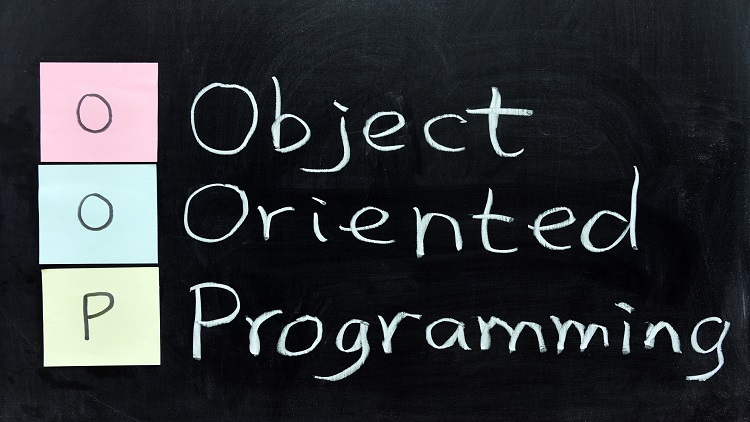

Programación Orientada a objetos
Apreciado estudiante, en esta sección podrá observar material, correspondiente a textos complementarios en los cuales se explican conceptos claves para comprender la importancia y utilidad de la programación orientada a objetos.
Programación orientada a objetos (POO). Es un paradigma de programación que usa objetos y sus interacciones, para diseñar aplicaciones y programas informáticos. Está basado en varias técnicas, incluyendo herencia, abstracción, polimorfismo y encapsulamiento. Su uso se popularizó a principios de la década de los años 1990. En la actualidad, existe variedad de lenguajes de programación que soportan la orientación a objetos.
¿Qué es un lenguaje de programación orientado a objetos?

La programación orientada a objetos (POO, u OOP según sus siglas en inglés) es un paradigma de programación que usa objetos en sus interacciones, para diseñar aplicaciones y programas informáticos. Está basada en varias técnicas, incluyendo herencia, cohesión, abstracción, polimorfismo, acoplamiento y encapsulamiento
Clases en POO
Las clases son declaraciones de objetos, también se podrían definir como abstracciones de objetos. Esto quiere decir que la definición de un objeto es la clase. Cuando programamos un objeto y definimos sus características y funcionalidades en realidad lo que estamos haciendo es programar una clase. En los ejemplos anteriores en realidad hablábamos de las clases coche o fracción porque sólo estuvimos definiendo, aunque por encima, sus formas.
Propiedades en clases
Las propiedades o atributos son las características de los objetos. Cuando definimos una propiedad normalmente especificamos su nombre y su tipo. Nos podemos hacer a la idea de que las propiedades son algo así como variables donde almacenamos datos relacionados con los objetos.
Métodos en las clases
Son las funcionalidades asociadas a los objetos. Cuando estamos programando las clases las llamamos métodos. Los métodos son como funciones que están asociadas a un objeto.
Objetos en POO
Los objetos son ejemplares de una clase cualquiera. Cuando creamos un ejemplar tenemos que especificar la clase a partir de la cual se creará. Esta acción de crear un objeto a partir de una clase se llama instanciar (que viene de una mala traducción de la palabra instace que en inglés significa ejemplar). Por ejemplo, un objeto de la clase fracción es por ejemplo 3/5. El concepto o definición de fracción sería la clase, pero cuando ya estamos hablando de una fracción en concreto 4/7, 8/1000 o cualquier otra, la llamamos objeto.
Conceptos fundamentales
La programación orientada a objetos es una forma de programar que trata de encontrar una solución a estos problemas. Introduce nuevos conceptos, que superan y amplían conceptos antiguos ya conocidos. Entre ellos destacan los siguientes:
Clase
Definiciones de las propiedades y comportamiento de un tipo de objeto concreto. La instanciación es la lectura de estas definiciones y la creación de un objeto a partir de ellas.
Herencia
Es la facilidad mediante la cual la clase D hereda en ella cada uno de los atributos y operaciones de C, como si esos atributos y operaciones hubiesen sido definidos por la misma D. Por lo tanto, puede usar los mismos métodos y variables publicas declaradas en C. Los componentes registrados como "privados" (private) también se heredan, pero como no pertenecen a la clase, se mantienen escondidos al programador y sólo pueden ser accedidos a través de otros métodos públicos. Esto es así para mantener hegemónico el ideal de OOP.
Objeto
Entidad provista de un conjunto de propiedades o atributos (datos) y de comportamiento o funcionalidad (métodos) los mismos que consecuentemente reaccionan a eventos. Se corresponde con los objetos reales del mundo que nos rodea, o a objetos internos del sistema (del programa). Es una instancia a una clase.
Método
Algoritmo asociado a un objeto (o a una clase de objetos), cuya ejecución se desencadena tras la recepción de un "mensaje". Desde el punto de vista del comportamiento, es lo que el objeto puede hacer. Un método puede producir un cambio en las propiedades del objeto, o la generación de un "evento" con un nuevo mensaje para otro objeto del sistema.
Evento
Es un suceso en el sistema (tal como una interacción del usuario con la máquina, o un mensaje enviado por un objeto). El sistema maneja el evento enviando el mensaje adecuado al objeto pertinente. También se puede definir como evento, a la reacción que puede desencadenar un objeto, es decir la acción que genera.
Mensaje
Una comunicación dirigida a un objeto, que le ordena que ejecute uno de sus métodos con ciertos parámetros asociados al evento que lo generó.